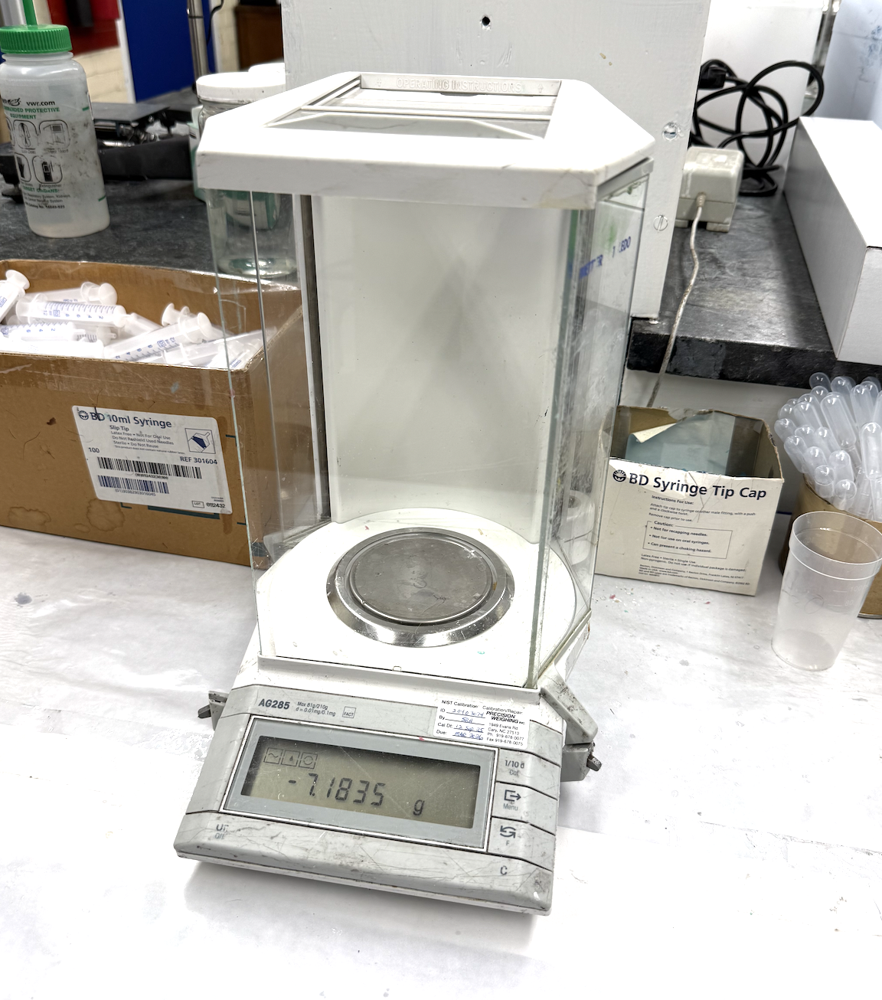
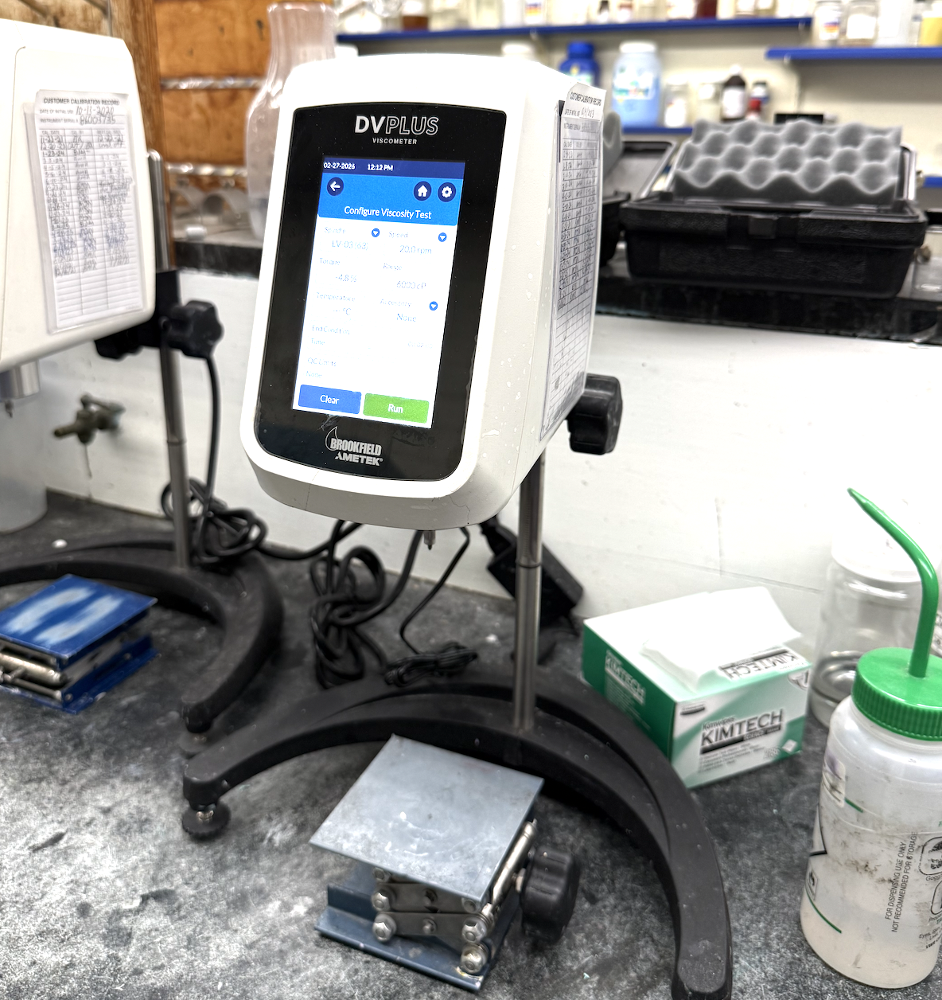
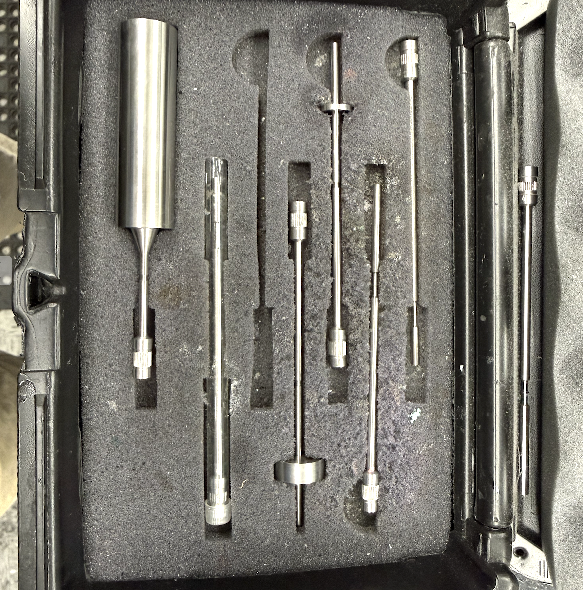
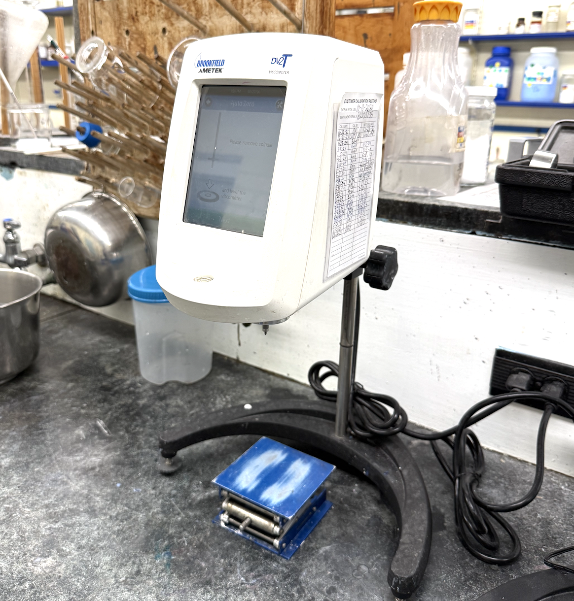

QC Principles
Quality control in a laboratory setting is the process of ensuring that every test, measurement, and result meets a defined standard before it is approved or used. In an industrial chemistry lab, QC is not optional. It is the backbone of every decision made about a product. If a batch of a chemical does not meet its required specifications, it cannot leave the facility. QC work involves running tests on processed materials, comparing results against established standards, identifying inconsistencies, and making sure that procedures are followed exactly the same way every time, regardless of who is running them. Without it, there is no reliable way to know whether a product is what it is supposed to be.
Internship Role & Impact
Throughout my internship at Jain Chem Ltd., I assisted with quality control on a regular basis. I prepared samples, ran tests on processed materials, recorded data, and reviewed results before they were approved. I performed hydroxyl value titrations, particle size testing, and various other analytical tests as part of the QC process. I also helped organize documentation and reviewed existing procedures to understand how consistency is maintained across different chemists running the same analysis. One of the more meaningful contributions I made was writing a step-by-step procedure for the Phosphate Ester titration so that other chemists could replicate my method accurately. QC taught me that precision and consistency are not suggestions in a lab environment. Every number matters and every step exists for a reason.
Operational Evidence

Balance Scale

Viscosity Tester

Viscosity Spindle

Viscosity Tester 2